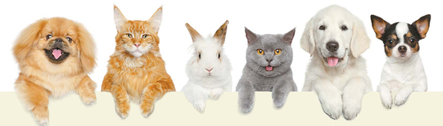
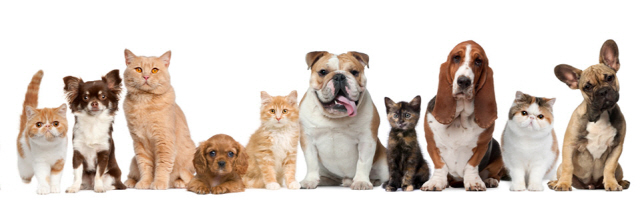

애완동물의 정의와 역사
분류 : 애완동물
1) 애완동물이란?
애완동물은 좋아하여 가까이 두고 귀여워하며 기르는 동물을 말한다. 엄밀하게 따지면 가축의 한 부류라고 할 수 있지만, 실제 언어생활에서는 분리하여 부르는 게 보통이다. 그리고 오늘날에는 동물을 인간의 즐거움을 위한 소유물이 아니라, 반려자로서 대우하자는 의미에서 '반려동물'이란 표현을 쓰기도 한다.
세는나이(한국식 나이)에 익숙한 한국에서는 간혹 애완동물의 나이를 세는나이로 따지는 사람도 있는데, 세는나이로 나이를 세면 동물의 생체 나이에 맞는 적절한 육성법이 지켜지지 않을 위험성이 크기 때문에 절대 사용하지 말아야 한다. 반드시 만 나이로 세야 한다.
세는나이(한국식 나이)에 익숙한 한국에서는 간혹 애완동물의 나이를 세는나이로 따지는 사람도 있는데, 세는나이로 나이를 세면 동물의 생체 나이에 맞는 적절한 육성법이 지켜지지 않을 위험성이 크기 때문에 절대 사용하지 말아야 한다. 반드시 만 나이로 세야 한다.


2) 애완동물의 역사
알려진 인류의 첫 애완동물은 개로 기원전 1만 2천 년 전의 구석기 원시인들이 이미 개를 길들여 함께 생활한 것을 화석이나 여러 가지 유물로 알 수 있다.
개를 인류가 길들인 목적으로는 야생 동물의 공격으로부터 집을 지키거나 사냥에 도움을 주는 목적이었을 것으로 추정하고 있으나, 흥미로운 화석으로는 구석기 원시인 무덤에서 온전한 개의 뼈가 발굴된 예가 있다.
이러한 사실로부터 구석기 원시인들조차도 개와 교감을 나누며 함께 생활하는 반려동물로 여겼다는 것을 알 수 있다.
개를 인류가 길들인 목적으로는 야생 동물의 공격으로부터 집을 지키거나 사냥에 도움을 주는 목적이었을 것으로 추정하고 있으나, 흥미로운 화석으로는 구석기 원시인 무덤에서 온전한 개의 뼈가 발굴된 예가 있다.
이러한 사실로부터 구석기 원시인들조차도 개와 교감을 나누며 함께 생활하는 반려동물로 여겼다는 것을 알 수 있다.
3) 반려동물의 역사
1983년 오스트리아의 'In The Human-Pet Relationship'에서 'companion animal'이라는 어휘가 처음으로 사용되었다. 이후 'pet'이라는 용어가 동물을 소유와 지배의 대상으로 여긴다는 주장이 제기되었으며, 대신에 'companion animal'이 정치적 올바름 운동에 따른 언어 순화 기류를 타고 널리 보급되었다. 이와 비슷하게 90년대 이후 대한민국 국내에서도 주로 동물단체를 중심으로 "애완동물의 '완(玩)'이 '완구(장난감)'처럼 '유희의 대상'이라는 뉘앙스를 가진다."는 주장이 제기되었다. 2000년대 이후에는 용어 '반려동물'이 새로이 표준국어대사전에 등록되고 법령에서 공식적으로 사용하였으며, 일상적으로도 사용 빈도가 늘어나면서 언론 역시 '반려동물'이라는 표현을 사용하기 시작하였다.
현행 동물보호법상 '반려동물'로 인정되는 동물은 고양이와 개, 햄스터 등에 국한되어 있다. 이러한 점 때문에 반려동물이라는 용어가 소수의 동물에 한해서만 인정되는 협의의 표현이라는 오해가 퍼지기도 했는데, 실제로는 어류나 파충류 등도 애호가들이 많이 양육하고 반려동물로서 기르고 있다. 또한 법의 효용적 측면에서 따져 보면, 문장의 취지와 실질적 맥락 및 상관관계를 면밀히 살피기 이전에 단순히 법 조문에 등재되지 않았다고 하여 이를 제외하는 것은 법을 잘못 해석하는 것이기도 하다.
현행 동물보호법상 '반려동물'로 인정되는 동물은 고양이와 개, 햄스터 등에 국한되어 있다. 이러한 점 때문에 반려동물이라는 용어가 소수의 동물에 한해서만 인정되는 협의의 표현이라는 오해가 퍼지기도 했는데, 실제로는 어류나 파충류 등도 애호가들이 많이 양육하고 반려동물로서 기르고 있다. 또한 법의 효용적 측면에서 따져 보면, 문장의 취지와 실질적 맥락 및 상관관계를 면밀히 살피기 이전에 단순히 법 조문에 등재되지 않았다고 하여 이를 제외하는 것은 법을 잘못 해석하는 것이기도 하다.